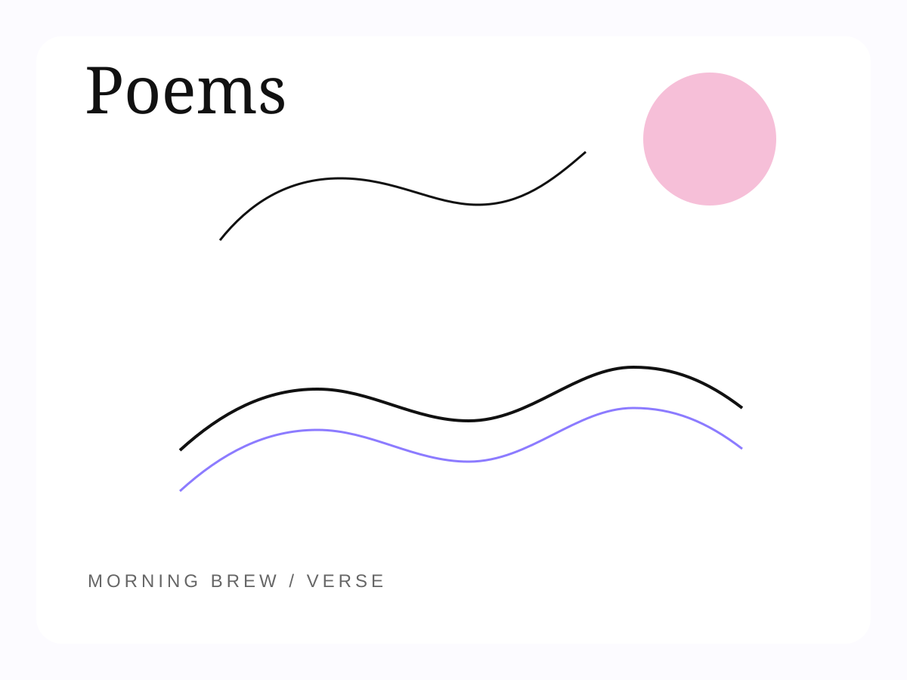
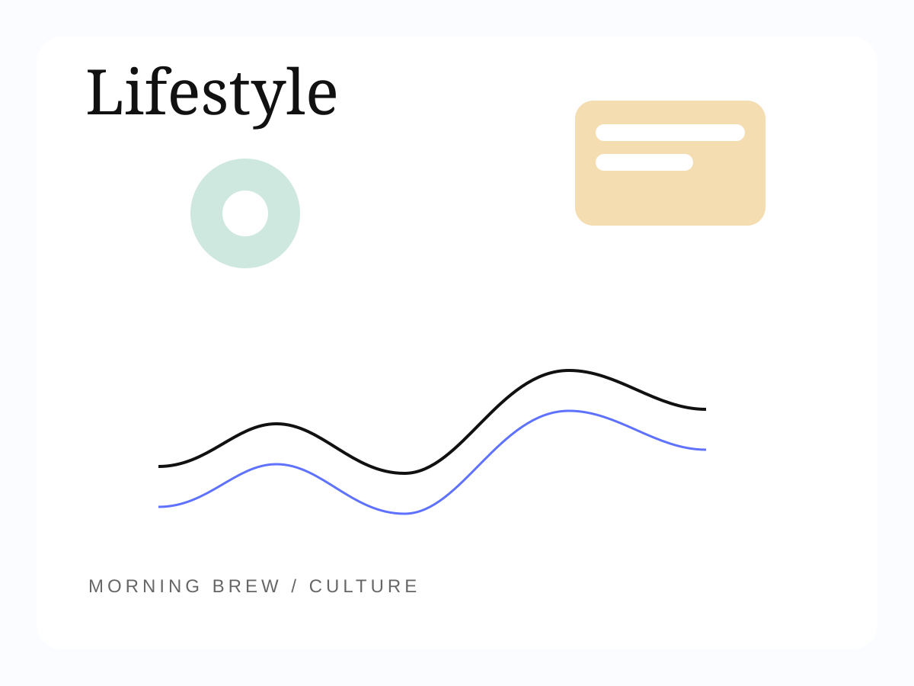

Featured Essay
The Shoes We Outgrow
On moving on and moving forward, and the strange ache of realizing that growth rarely asks for permission before it changes you.
Read the essaySydney Holzman
Short stories, poems, food pieces, lifestyle writing, and essays shaped by attention, memory, and whatever lingers longest.

Sydney writes across forms, from personal essays and speeches to journalism, letters, and literary work, always returning to the same instinct: to pay close attention and give language to what lingers.
Morning Brew holds work that begins in observation: family stories, appetite, campus rituals, weather, grief, jokes, and the quiet strangeness of growing up in public.
Some pieces stay close to the body. Some report outward. All of them begin with attention and end somewhere a little more human.
Archive
Featured Essay
On moving on and moving forward, and the strange ache of realizing that growth rarely asks for permission before it changes you.
Read the essay
Short Stories
Where Daisies LingerA short story about a man whose life revolves around death until love unsettles everything he thought he understood.

Food Pieces
How To Lose A Girl in One Crawfish BoilTulane men keep proving romance is temporary, but a bad restaurant choice is forever.

Poems

Lifestyle
About
Sydney is a writer whose work lives in the details most people walk past. A senior at Tulane University and contributor to Spoon University and Hopelessly Yellow, she writes across forms: personal essays, speeches, journalism, letters, but the thread that runs through all of it is the same: an instinct to pay attention and give language to what lingers.
She collects the moments other people forget and turns them into something worth holding onto.
Whether she is writing for a crowd of thousands or an audience of one, her voice is warm, specific, and unmistakably hers.
“She collects the moments other people forget and turns them into something worth holding onto.”
Submit
If you have a subject Sydney should write toward, a memory worth revisiting, or a piece you want to share, send it here.
sydwin753@gmail.com